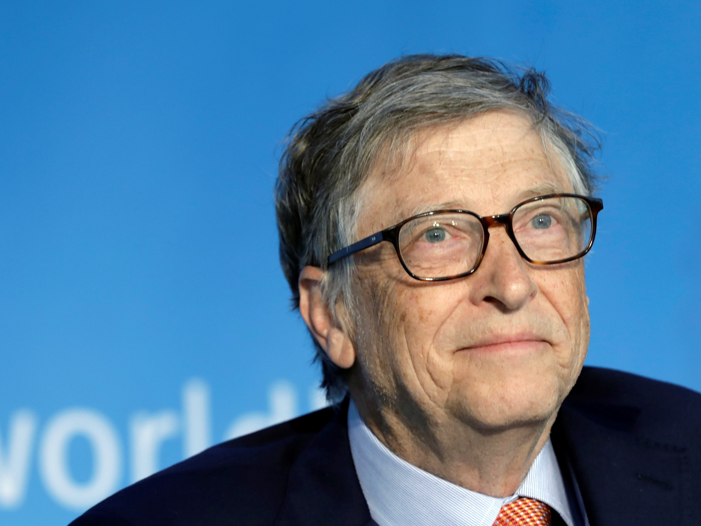
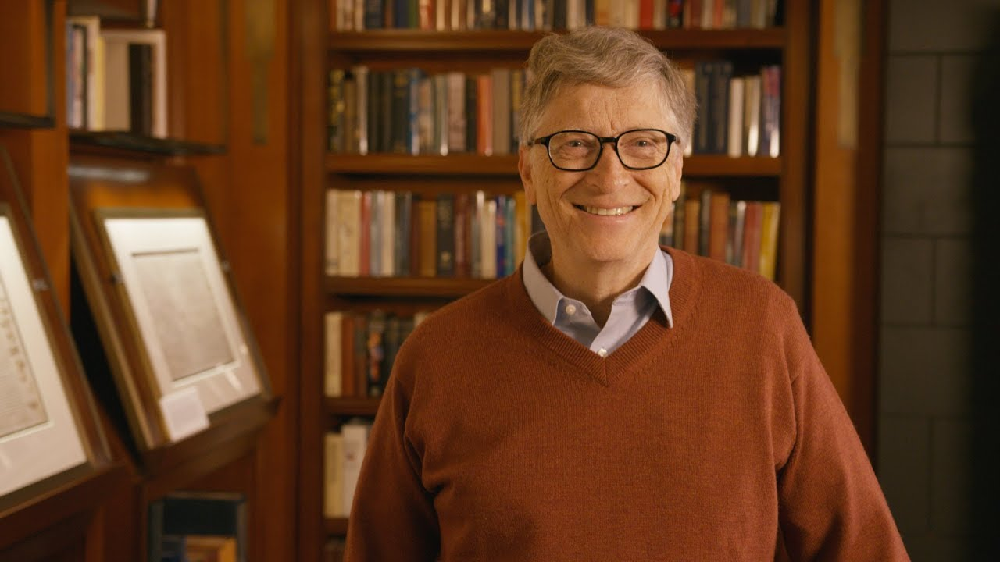

In my lifetime, I’ve seen two demonstrations of technology that struck me as revolutionary. The first time was in 1980, when I was introduced to a graphical user interface—the forerunner of every modern operating system, including Windows. I sat with the person who had shown me the demo, a brilliant programmer named Charles Simonyi, and we immediately started brainstorming about all the things we could do with such a user-friendly approach to computing. Charles eventually joined Microsoft, Windows became the backbone of Microsoft, and the thinking we did after that demo helped set the company’s agenda for the next 15 years. The second big surprise came just last year. I’d been meeting with the team from OpenAI since 2016 and was impressed by their steady progress. In mid-2022, I was so excited about their work that I gave them a challenge: train an artificial intelligence to pass an Advanced Placement biology exam. Make it capable of answering questions that it hasn’t been specifically trained for. (I picked AP Bio because the test is more than a simple regurgitation of scientific facts—it asks you to think critically about biology.) If you can do that, I said, then you’ll have made a true breakthrough. I thought the challenge would keep them busy for two or three years. They finished it in just a few months. In September, when I met with them again, I watched in awe as they asked GPT, their AI model, 60 multiple-choice questions from the AP Bio exam—and it got 59 of them right. Then it wrote outstanding answers to six open-ended questions from the exam. We had an outside expert score the test, and GPT got a 5—the highest possible score, and the equivalent to getting an A or A+ in a college-level biology course. Once it had aced the test, we asked it a non-scientific question: “What do you say to a father with a sick child?” It wrote a thoughtful answer that was probably better than most of us in the room would have given. The whole experience was stunning. I knew I had just seen the most important advance in technology since the graphical user interface. This inspired me to think about all the things that AI can achieve in the next five to 10 years. The development of AI is as fundamental as the creation of the microprocessor, the personal computer, the Internet, and the mobile phone. It will change the way people work, learn, travel, get health care, and communicate with each other. Entire industries will reorient around it. Businesses will distinguish themselves by how well they use it. Philanthropy is my full-time job these days, and I’ve been thinking a lot about how—in addition to helping people be more productive—AI can reduce some of the world’s worst inequities. Globally, the worst inequity is in health: 5 million children under the age of 5 die every year. That’s down from 10 million two decades ago, but it’s still a shockingly high number. Nearly all of these children were born in poor countries and die of preventable causes like diarrhea or malaria. It’s hard to imagine a better use of AIs than saving the lives of children. I’ve been thinking a lot about how AI can reduce some of the world’s worst inequities. In the United States, the best opportunity for reducing inequity is to improve education, particularly making sure that students succeed at math. The evidence shows that having basic math skills sets students up for success, no matter what career they choose. But achievement in math is going down across the country, especially for Black, Latino, and low-income students. AI can help turn that trend around. Climate change is another issue where I’m convinced AI can make the world more equitable. The injustice of climate change is that the people who are suffering the most—the world’s poorest—are also the ones who did the least to contribute to the problem. I’m still thinking and learning about how AI can help, but later in this post I’ll suggest a few areas with a lot of potential. In short, I'm excited about the impact that AI will have on issues that the Gates Foundation works on, and the foundation will have much more to say about AI in the coming months. The world needs to make sure that everyone—and not just people who are well-off—benefits from artificial intelligence. Governments and philanthropy will need to play a major role in ensuring that it reduces inequity and doesn’t contribute to it. This is the priority for my own work related to AI. Any new technology that’s so disruptive is bound to make people uneasy, and that’s certainly true with artificial intelligence. I understand why—it raises hard questions about the workforce, the legal system, privacy, bias, and more. AIs also make factual mistakes and experience hallucinations. Before I suggest some ways to mitigate the risks, I’ll define what I mean by AI, and I’ll go into more detail about some of the ways in which it will help empower people at work, save lives, and improve education. Fonte: GatesNotes